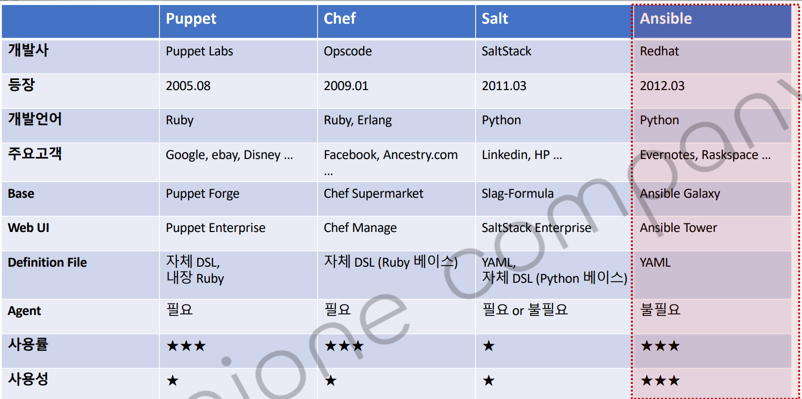
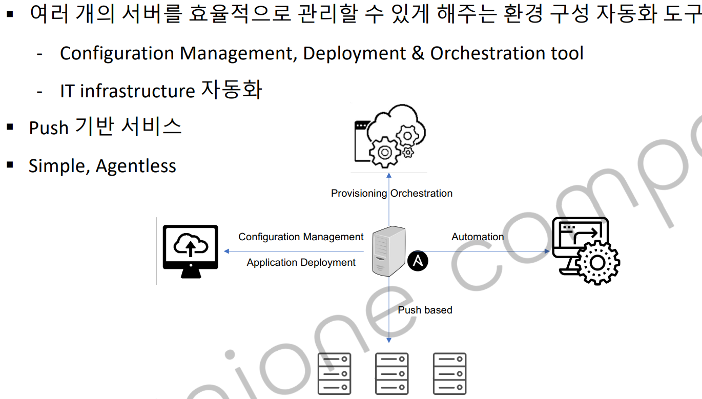
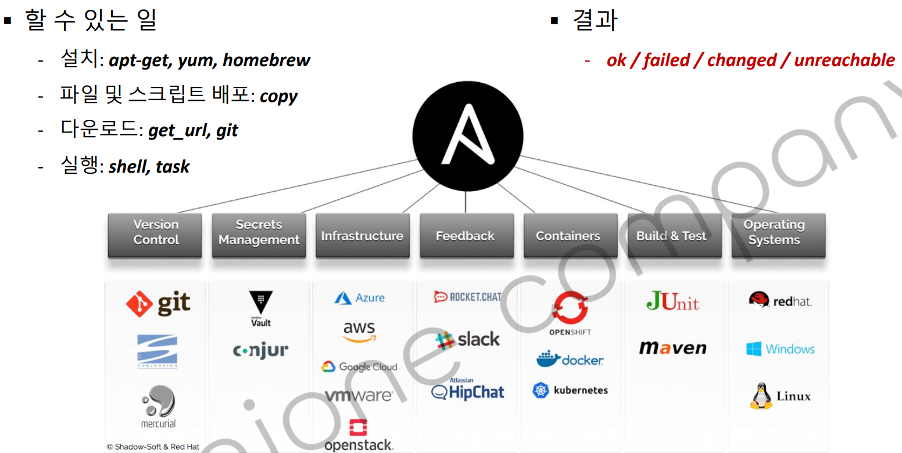
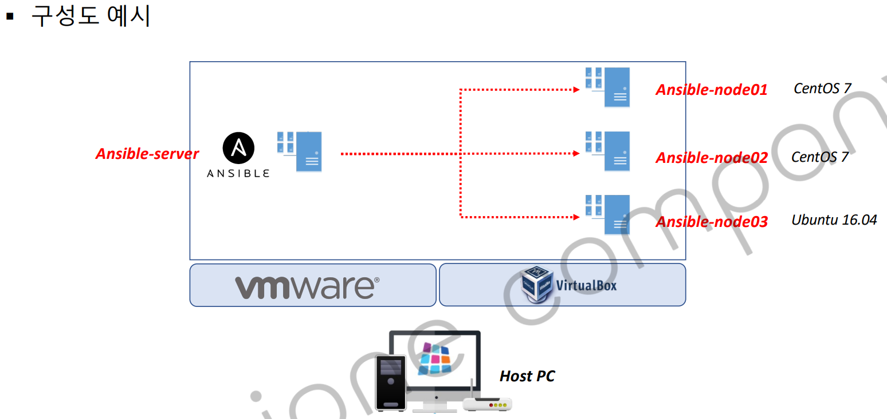
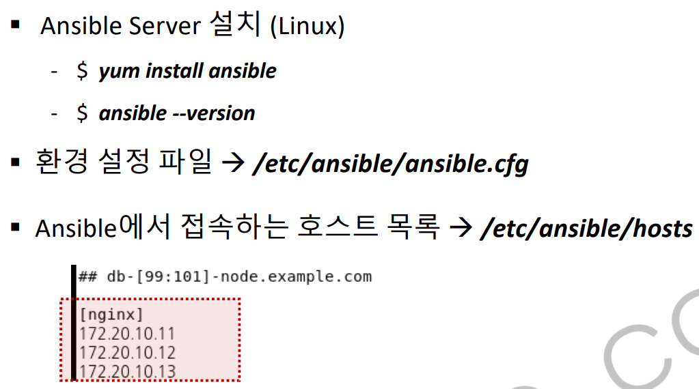

ci-cd-section-01-ch-03-ansible

- 특징
Python을 지원하는데, Agent가 필요없습니다.
메인서버가 있고, 서비스가 클라이언트라고 한다면 메인 서버로부터 정보를 전달받기 위해 agent가 필요했습니다.
서로 프로토콜을 통해서 통신하고, 어떤 작업을 진행할지 결정을 내려줘야하는데 Ansible은 에이전트가 클라이언트 단에 필요없다는게 특징입니다.
이유는 각 서버의 파이썬이 가지고 있는 네트워크 모듈을 통해서 서버와 통신하기 때문입니다.
기본적으로 리눅스 시스템 같은 경우에는 파이썬이 설치가 되어있습니다.
윈도우 환경에서 사용한다면, 파이썬이 설치가 되어있어야합니다.

엔서블은 여러 개의 서버를 효율적으로 관리할 수 있도록 지원해주는 환경 구성 자동화 도구 입니다.
기존 Jenkins 빌드 작업의 문제점은 이미 실행중인 컨테이너가 있고, 동일한 이름, 동일한 포트를 사용하는 경우에는 작업이 진행되지 않았습니다.
이 작업은 기존에 작업되어있던 컨테이너를 중재하거나 여러 번 실행을 한다고 하더라도 지속적으로 그 작업이 반응할 수 있도록 하면 됩니다.
Ansible 목적
도커 코어에서 기동중인 컨테이너를 다시 기동하거나 중지하고 다시 기동하거나 이미지를 다시 배포하거나 이런 용도로 Configuration 매니저먼트나 배포를 관리해주는 용도로 사용하려고 합니다.
엔서블 서버가 애플리케이션을 배포하거나 구성 정보를 변경하는 용도로 사용할 수 있습니다. 자동화하는 시스템에서도 사용할 수 있습니다.
프로비저닝이나 오케스트레이션 도구에서도 사용할 수 있습니다.
작업되어진 내용을 우리가 관리하는 대상 서버들에게 푸시 형태로 데이터를 전달합니다.
푸시 형식으로 데이터를 전달을 할 때는 이 서버와 각각의 관리대상 서버 둘 사이의 통신은 파이썬이 있는 ssh 프로토콜을 통해서 데이터를 주고 받습니다.
기능

앤서블 서버에서 대상 서버가 되는 곳에다가 프로그램을 다운로드 받고 설치 작업을 할 수 있습니다. 파일을 복사하거나 시스템을 제어할 수 있습니다.
명령어를 실행했을 때 4가지 반환값으로 나타납니다
ok/failed/changed/unreachable
직관적으로 실행했던 명령어가 제대로 동작되었는지 확인할 수 있습니다.
구성

엔서블은 윈도우 환경에서 설치하기 어렵기 때문에 가상화로 리눅스 OS를 사용하여 설치합니다.
VMWARE
VirtualBox
Docker
를 활용하여 가상화를 통해서 리눅스를 설치합니다.
그리고 엔서블 서버에서 관리하는 대상 서버를 node1,node2,node3으로 지정합니다.
엔서블 서버에서 관리하는 서버가 다른 운영체제(CentOS, Ubuntu 16.04 )라고 할지라도 파이썬 모듈과 각각의 모듈의 노드가 가지고 있는 파이썬 모듈만 준비되어있다면 통신에는 제약이 없습니다.
실행

엔서블을 설치후에 두 가지 파일을 기억해야합니다.
환경 설정 파일 위치
엔서블 관리 대상 서버의 목록
엔서블에서 접속하는 서버의 목록을 ip나 homename을 통해서 저장할 수 있습니다.
예시로 [nginx]라는 그룹을 만들어서 그룹 앞에 보이는 11,12,13의 ip를 가지고 서버 세 대를 만들었습니다.